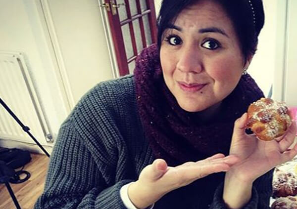
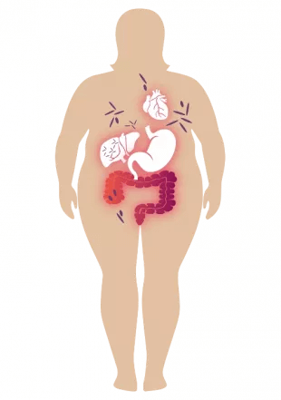
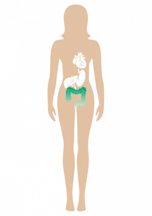
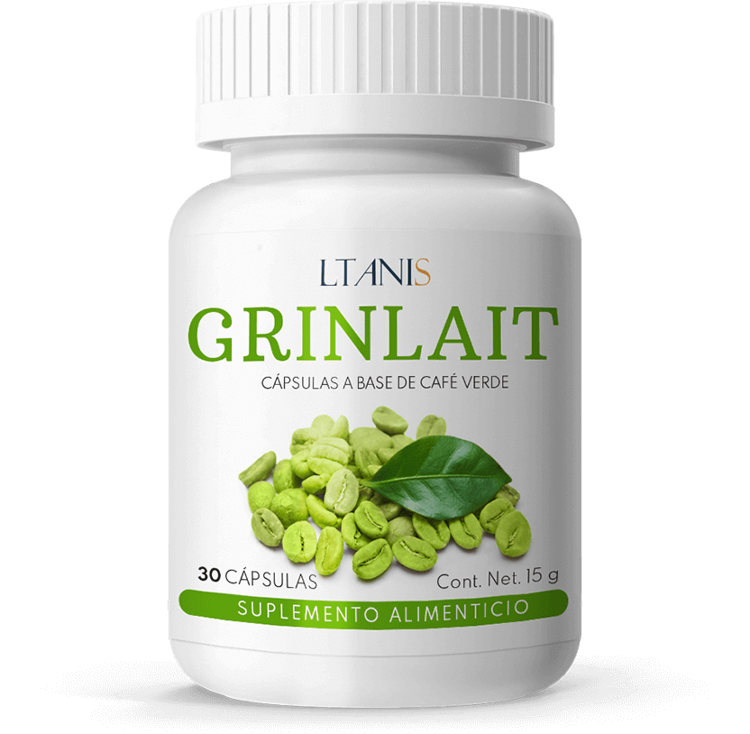
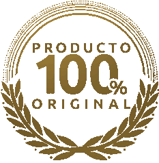
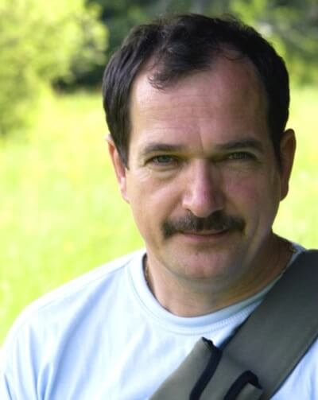

En 28 días adelgazarás 14 kg:
efectos demostrados por pruebas médicas independientes
En 28 días
adelgazarás 14 kg: efectos demostrados por pruebas médicas independientes
Hola:
Soy el profesor Macario Islas, científico especialista en biología molecular. En esta
página quiero presentarte el mayor logro de mi vida, por el que ya me han otorgado
varios premios prestigiosos . Elaboré un tratamiento natural gracias al que
cualquiera puede adelgazar 14 kg en 28 días de manera automática, sin dietas y sin
esfuerzo.
Hola:
Soy el profesor Macario Islas, científico especialista en biología molecular. En
esta página quiero presentarte el mayor logro de mi vida, por el cual he recibido hasta
ahora más de diez premios prestigiosos . Elaboré un tratamiento natural gracias
al que cualquiera puede adelgazar 14 kg en 28 días de manera automática, sin dietas y
sin esfuerzo.
Por eso, si quieres conseguir
lo siguiente SIN tener que cambiar tu estilo de vida:
Por eso, si quieres
conseguir lo siguiente SIN tener que cambiar tu estilo de vida:
perder 14 kg en 28 días , incluso si anteriormente matarte de hambre y los
entrenamientos intensos no te dieron resultados;
bajar los niveles del colesterol malo ya después de las 2 primeras semanas de
uso del método y disminuir el riesgo de ateroesclerosis un 82%;
bajar el nivel de azúcar en la sangre, previniendo eficazmente el desarrollo de
la diabetes;
disminuir un 91% el riesgo de sufrir un derrame, infarto, ictus o artrosis;
parar de una vez por todas el efecto yo-yo :
ganar 3 veces más de energía y verte fenomenal te pongas lo que te pongas...
Puedes conseguir todo esto sin visitar a
nutricionistas, sin ponerte a régimen, sin la necesidad de entrenar, matarte de hambre o
realizar otros sacrificios y sentir frustración. Y, además, ahorrar miles de pesos . Por
lo tanto, lee sin falta lo que tengo que decirte.
No importa la edad que tengas, ni el
tiempo durante el cual hayas sufrido sobrepeso. Tampoco tiene importancia si tu sobrepeso es
hereditario o lo ganaste durante el embarazo o por tomar medicamentos. No importa si solo tienes
unos pocos kilos de más o si sufres de una obesidad mórbida. Tampoco tiene importancia si los
cientos de intentos de bajar de peso no dieron resultados y solo te trajeron más decepciones...
Debes saber que este es el final de tus problemas . Gracias a mi método, en 28 días
puedes perder 14 kg de una vez por todas y por fin lograr una figura delgada y
atractiva . Sin esfuerzo, sin dieta y sin sacrificios.
Estas son las razones por las
que mi método es una alternativa estupenda a las dietas para adelgazar:
Estas son las razones por
las que mi método es una alternativa estupenda a las dietas para adelgazar:
Es natural y funciona en armonía con tu cuerpo. Pasando hambre nunca lograrás el
objetivo deseado. Nuestro cuerpo está creado para comer. Es simple y obvio. En el momento en
que le quitas la comida, actúas contra la naturaleza. De esta manera, no se puede lograr un
efecto adelgazante por más tiempo. Lo mismo sucede cuando obligas al cuerpo a hacer
ejercicios antinaturales. Mi método cambia la manera en la que se quema el tejido adiposo y
la tasa metabólica, y gracias a eso...
Garantiza efectos rápidos y visibles. En lugar de comer verduras al vapor
durante meses, negándote tus platos y dulces favoritos y calculando cada gramo de comida,
puedes sencillamente ajustar tu cuerpo a un nivel diferente de quema de grasa. Sin levantar
pesas, dar saltos y otras tonterías. Se trata de afinar los mecanismos metabólicos.
No tienes que matarte de hambre. Sí, como ya te lo dije: puedes comer lo que
quieras, cuanto quieras, cuando quieras. No son los alimentos los que hacen que no puedas
perder peso, sino la forma en que el cuerpo dispone de ellos y cómo los convierte en energía
si es que lo hace.
Quema grasa de forma automática las 24 horas del día. Puedes perder peso incluso
mientras estás acostado en el sofá con el mando a distancia en la mano. Todo porque mi
método limita el apetito y acelera los procesos de quema de grasa más de un 350%.
Protege la salud. Mi método purifica el cuerpo de acúmulos mortales y toxinas, y
también reduce el nivel de colesterol malo y azúcar en la sangre. Por lo tanto, reduce
radicalmente el riesgo de ateroesclerosis, ataque cardíaco, ictus, hemorragia cerebral y
diabetes, así como la artrosis de rodilla y cadera.
Adelgaza de una vez por todas. El método funciona de acuerdo con el modo natural
del funcionamiento del cuerpo. Por lo tanto, no es posible que aparezca el efecto yo-yo, que
es común después de finalizar cada dieta.
Permite ahorras cientos y miles de pesos. En lugar de gastar dinero en
nutricionistas, entrenadores y productos supuestamente dietéticos, puedes usar mi método.
Una vez al día durante 1 mes y acabarás con el sobrepeso de una vez por todas.
He creado un método natural que elimina
las causas del sobrepeso y quema la grasa de manera automática
Gracias a mi método, eliminarás el
sobrepeso de una vez por todas, conseguirás la silueta soñada y protegerás tu salud... Te podrás
olvidar de estas tallas de ropa enormes, del dolor de rodilla subiendo las escaleras, la falta
de aliento y el sudor al realizar siquiera un pequeño esfuerzo. Y también de la vergüenza, la
frustración y la envidia que en tantas ocasiones te tuviste que tragar.
Gracias a mi método, en tan solo 28 días
pesarás aprox. 14 kg menos. ¡Cabrás en cualquier prenda, y tu figura será envidiable! Por fin
podrás lucir con orgullo un cuerpazo en la playa, en la alberca o en los momentos íntimos con tu
pareja... Todo gracias a que pude desarrollar una fórmula que destruye las causas del sobrepeso
y quema la grasa de manera automática las 24 horas del día. ¿Cómo lo hice?
Quería librar a mi esposa de los
complejos
Según las últimas investigaciones, una de
cada tres personas en México tiene sobrepeso. Es un gran problema, especialmente para las
mujeres. Un cuerpo bien formado nos da confianza y nos hace sentir más atractivos, y es una
necesidad completamente natural y correcta para todos. Peor aún, la obesidad supone un
riesgo grave para la salud . El sobrepeso causa "no solo" un mayor riesgo (alrededor
del 350%) de derrames, ateroesclerosis, diabetes, ictus, ataques cardíacos o artrosis graves.
También es la causa de enfermedades que dificultan considerablemente la vida cotidiana, por
ejemplo, los juanetes, los eccemas o las erupciones cutáneas y alergias. Desafortunadamente, los
problemas de sobrepeso también afectaron a mi esposa Miranda...
Antes de que nos casáramos, era una mujer
hermosa y delgada. No contaba las calorías, comía lo que quería y no engordaba. Sin embargo, con
el paso de los años, y después de dar a luz a dos hijos, comenzó a ganar peso. Las lonjas en la
panza, y las caderas y los muslos gordos se convirtieron en una fuente de grandes complejos para
ella. Aunque yo la amaba como era, noté que no se sentía bien. Tanto física como
mentalmente.
Miranda se avergonzaba de su
cuerpo , no conseguía aceptar su apariencia. Debido a todo esto, se volvió irritable.
Literalmente, todos tenían miedo de hablarle. Un día ella volvió a casa toda histérica. "El
vestido se me rompió. ¡Soy una ballena gorda y asquerosa!", gritó sollozando. Cerró la puerta de
golpe y se encerró en el dormitorio. Y así empezó a verse nuestra vida cotidiana.
¡Esto suponía una amenaza para su
vida!
Sin embargo, lo peor estaba por llegar.
La salud de Miranda empezó a empeorar. Las articulaciones dejaron de responderle. No era capaz
de subir al 2º piso porque le dolían las rodillas y le costaba respirar. Por eso fue al médico,
pero él no mostró ni una pizca de piedad. Fue totalmente sincero y se limitó a decir: "Si no
adelgazas ni reduces tu nivel de colesterol, no vas a llegar a la vejez ". Por eso
empezó a adelgazar, o más bien a matarse de hambre. Por desgracia, ninguna dieta hizo efecto.
Cuando perdía unos cuantos kilos, volvía a engordarlos con creces por culpa del metabolismo
lento. Cada vez estaba más frustrada. Por si no fuera suficiente con sentir asco por su
propio cuerpo, también estaba perdiendo salud.
¿Y cómo inventé el "antídoto al
sobrepeso"?
Tenía que ayudar a mi esposa a recuperar
un cuerpo delgado y, con él, el bienestar y, sobre todo, la salud. Quería que se deshiciera de
su obsesión por la apariencia y que volviera a ser feliz. Pensé: "Hombre, ¡eres
científico! La biología y la química te las sabes al dedillo. Desarrollaste muchos
remedios contra diversas afecciones. ¡Inventa algo para el sobrepeso!” Entonces comencé a
investigar...
Prácticamente justo después de aplicar mi
fórmula para adelgazar, mi esposa se sintió mejor. Se alegró de no tener ataques de hambre, de
que ya no pensaba en comer dulces todo el rato. Y apenas era el principio. Tras la primera
semana, adelgazó hasta 5 kg. Irradiaba energía. “Adrián, ¡me siento como si la grasa se
evaporara de mí! ” - gritó emocionada con los cachetes rosados de alegría cuando se
puso los pantalones en los que no cabía desde hacía 4 años.
Bajó 26 kilogramos sin dietas en 2
meses
No creíamos nuestros propios
ojos cuando cada día la báscula mostraba menos y menos kilos, y los perímetros de la cintura, la
cadera y los muslos de mi esposa disminuían. Desapareció la celulitis que tanto odiaba. Después
de 2 meses, mi esposa me confesó feliz, rebosando de alegría: "¡Probé mi vestido de boda y me
queda como un guante! ¡ Recuperé mi figura de antes de la boda! ¡Inventaste un antídoto
para el sobrepeso! ¡A cuánta gente le va a ayudar! Estoy tan agradecida".
No creíamos nuestros propios
ojos cuando cada día la báscula mostraba menos y menos kilos, y los perímetros de la cintura, la
cadera y los muslos de mi esposa disminuían. Desapareció la celulitis que tanto odiaba. Después
de 2 meses, mi esposa me confesó feliz, rebosando de alegría: "¡Probé mi vestido de boda y me
queda como un guante! ¡ Recuperé mi figura de antes de la boda ! ¡Inventaste un
antídoto para el sobrepeso! ¡A cuánta gente le va a ayudar! Estoy tan agradecida".
Gracias a mi fórmula para adelgazar
Miranda perdió 26 kg en 2 meses . Perdía peso automáticamente, sin hacer una dieta
draconiana, sin ejercicios. Purificó el cuerpo y ahora irradia energía: sube corriendo las
escaleras más rápido que nuestra hija, ¡y no le duele nada! Pero esto no es todo. Tras hacerse
pruebas, el médico estuvo muy contento con sus resultados. ¡El colesterol se normalizó y ya no
tenemos miedo a la aterosclerosis, el infarto o el ictus!
Una pérdida de peso tan grande sin dañar
la salud era inalcanzable hasta ahora. Hoy en día, gracias a mi fórmula para adelgazar, no
solamente se puede perder peso de manera rápida y segura, sino también evitar el efecto
yo-yo.

Mi esposa recuperó la silueta de los
tiempos de nuestro noviazgo, y con ella, la energía y alegría de vivir.
Mi esposa
recuperó la silueta de los tiempos de nuestro noviazgo, y con ella, la energía y alegría de
vivir.
Déjame explicarte brevemente por qué
mi fórmula para adelgazar es tan eficaz. Su funcionamiento es doble:
Fase I – Purificación del
organismo
I - Purificación del
organismo
Nunca perderás ni siquiera 1 kg si no
purificas el organismo. Incluso si te matas de hambre y te torturas con ejercicios en el
gimnasio, la báscula te sigue mostrando lo mismo, porque en tus intestinos quedan incluso 15
kg de depósitos en descomposición , y en el sistema circulatorio hay toxinas
dañinas . Lo que hacen es frenar el metabolismo y bloquear la quema de grasa. Aunque
puede que no seas consciente de su existencia. No hay escapatoria. Las inhalas al respirar, las
tomas con agua y alimentos, incluso comiendo frutas y verduras.
Mi fórmula purifica el organismo de
depósitos dañinos y toxinas con eficacia. Pone al cuerpo en un modo de funcionamiento
completamente diferente: elimina las toxinas, pero también acelera la quema de grasa y permite
obtener 15 veces más energía de los alimentos. Por lo tanto, es posible eliminar por completo
los ataques de hambre, reducir radicalmente el apetito y detener el efecto yo-yo. Gracias a
esto, después de solo unos días de usar mi método, puedes entrar en la fase de la quema
automática de grasa
Fase II – Quema automática
de grasa
II - Quema automática de
grasa
En la fórmula incluí sustancias naturales
que literalmente destruyen las células de grasa . No tienes que ir al gimnasio, correr
ni hacer ejercicio. Si quieres tener músculo, por supuesto que lo puedes hacer. Sin embargo, si
solo deseas deshacerte de la grasa abdominal, eliminar la grasa de los muslos y las nalgas, y
deshacerte de la celulitis, es suficiente con usar mi fórmula para adelgazar.
Ya después de unos pocos días, comenzarás
a quemar la grasa las 24 horas al día de manera automática, incluso durante el sueño.
Además, bloquearás permanentemente el efecto yo-yo. Puedes estar segura de que te librarás de
esta grasa odiosa de una vez por todas . Gracias a este método, detendrás la
acumulación del tejido adiposo a nivel molecular y acelerarás radicalmente la quema de grasa.
¿Por qué mi fórmula para adelgazar fue
llamada un "antídoto maravilloso para adelgazar"
TIENE
MÁS DEL 98% DE EFICACIA
TIENE MÁS DEL 98% DE
EFICACIA

Metabolismo bloqueado por acúmulos dañinos y toxinas
Organismo purificado: metabolismo acelerado al
máximo
Hasta ahora, la pérdida de peso efectiva
parecía completamente imposible. Hoy en día, con la ayuda de mi fórmula para adelgazar, no solo
se puede detener, sino también revertir completamente el proceso de subir de peso. Lo confirma
el caso de mi esposa y de 14 mil personas que ya consiguieron una figura delgada gracias a mi
fórmula para adelgazar. Además, su eficacia fue demostrada sin lugar a duda en un
centro de investigación estadounidense de Chicago. Es un descubrimiento a escala mundial que se
ganó el reconocimiento y la admiración de destacados especialistas en nutrición y pérdida de
peso.
ES AL 100% SEGURA Y
EXTREMADAMENTE FÁCIL DE USAR
ES AL 100%
SEGURA Y EXTREMADAMENTE FÁCIL DE USAR
Los ingredientes naturales
obran milagros: ¡basta que la ciencia elabore su composición perfecta! Es el lema que me
acompañó cuando estaba creando mi fórmula para adelgazar. El tratamiento contiene únicamente
sustancias naturales, seguras y súper eficaces. Solo hay que aplicar la fórmula para
aumentar el nivel de testosterona día tras día, recuperar la masculinidad y volver a sentirse un
hombre de verdad. Las puse en forma de cápsulas de gel, fáciles de tragar, para que todos
pudieran llevar a cabo el tratamiento desde la comodidad de su casa sin ningún problema. Basta
con tomar 2 cápsulas al día (una antes de desayunar y otra antes de almorzar) para poder
observar cómo la grasa corporal literalmente se evapora de tu abdomen, muslos, glúteos
revelando tu nueva y soñada figura delgada.
Los ingredientes naturales
obran milagros: ¡basta que la ciencia elabore su composición perfecta! Es el lema que me
acompañó cuando estaba creando mi fórmula para adelgazar. El tratamiento contiene únicamente
sustancias naturales, seguras y súper eficaces. Solo hay que aplicar la fórmula para
aumentar el nivel de testosterona día tras día, recuperar la masculinidad y volver a sentirse un
hombre de verdad. Las puse en forma de cápsulas de gel, fáciles de tragar, para que todos
pudieran llevar a cabo el tratamiento desde la comodidad de su casa sin ningún problema. Basta
con tomar 2 cápsulas al día (una antes de desayunar y otra antes de almorzar) para poder
observar cómo la grasa corporal literalmente se evapora de tu abdomen, muslos, glúteos
revelando tu nueva y soñada figura delgada.
Todos tus amigos, compañeros, familiares
se sorprenderán al ver tu metamorfosis. ¡No podrán creerse que hayas perdido peso tan rápido sin
hacer absolutamente nada!
El tratamiento tiene forma
de cápsulas de fácil absorción, por lo que funciona a 3 niveles, asegurando:
El tratamiento tiene forma de
cápsulas de fácil absorción, por lo que funciona a 3 niveles, asegurando:
1. Seguridad total para la salud
- mi fórmula para adelgazar no contiene rellenos baratos (como harina o yeso) ni larvas
peligrosas de parásitos, como el 30% de productos para adelgazar. Es completamente
natural y segura para la salud. Gracias a ello, se absorbe de inmediato en el
organismo e influye en su funcionamiento.
2. Hidratación apropiada
- una cápsula tomada junto con agua permite que la absorción de las sustancias activas
aumente un 350%, pero también es responsable de una hidratación adecuada. Y esto es muy
importante para adelgazar con eficacia. La mayoría de los métodos deshidratan el organismo,
lo cual provoca trastornos y la aparición de reacciones defensivas. El cuerpo empieza a
defenderse contra el adelgazamiento. De esta manera, es imposible adelgazar. Ya una sola
aplicación de mi fórmula hidrata el cuerpo 4 veces mejor.
3. Acción inmediata de
- gracias a su forma natural y de fácil absorción, la fórmula funciona inmediatamente
después de ingerirse. Si hubieses tomado una cápsula antes de comenzar a leer este texto,
¡ahora mismo estarías quemando la grasa!
1. Seguridad total para la
salud : mi fórmula para adelgazar no contiene rellenos baratos (como harina o yeso) ni
larvas peligrosas de parásitos, como el 30% de productos para adelgazar. Es completamente
natural y segura para la salud. Gracias a ello, se absorbe de inmediato en el organismo
e influye en su funcionamiento.
2. Hidratación
adecuada : una cápsula tomada junto con agua permite que la absorción de las sustancias
activas aumente un 350%, pero también es responsable de una hidratación adecuada. Y esto es muy
importante para adelgazar con eficacia.La mayoría de los métodos deshidratan el organismo, lo
cual provoca trastornos y la aparición de reacciones defensivas. El cuerpo empieza a defenderse
contra el adelgazamiento. De esta manera, es imposible adelgazar. Ya una sola aplicación de mi
fórmula hidrata el cuerpo 4 veces mejor.
3. Acción inmediata :
gracias a su forma natural y de fácil absorción, la fórmula funciona inmediatamente después de
ingerirse. Si hubieses tomado una cápsula antes de comenzar a leer este texto, ¡ahora mismo
estarías quemando la grasa!

ELIMINACIÓN DE DEPÓSITOS DAÑINOS Y TOXINAS
ACELERACIÓN DEL METABOLISMO AL MÁXIMO
QUEMA AUTOMÁTICA DE GRASA LAS 24H AL DÍA
CUIDADO DE LA SALUD Y LA VITALIDAD
¿Cómo podrías dejar pasar esta
oportunidad para conseguir la silueta delgada de tus sueños?
Puedes seguir sufriendo por los complejos
causados por el sobrepeso y exponer tu salud. También puedes matarte con dietas ineficaces para
adelgazar... Pero, ¿para qué, teniendo en cuenta que te garantizo un método rápido, fácil y
seguro para adelgazar 14 kg en 28 días y conseguir una silueta delgada de ensueño? En
tan solo 28 días de tratamiento, te unirás a los 14 mil usuarios satisfechos del que ya
adelgazaron y ahora disfrutan de una silueta esbelta y la buena salud.
¡No arriesgas nada!
Usando perderás 14 kg en 28
días . Además, ¡no arriesgas nada! Mi fórmula para adelgazar, como un logro a escala
mundial, recibió la prestigiosa garantía triple: de originalidad, calidad y
satisfacción.
Garantía
triple de satisfacción
Garantía triple de
satisfacción

puedes estar seguro de que obtendrás un producto
original. Disponible solo a través de nuestra página web.
la pureza de los ingredientes activos cumple con
los más altos estándares de calidad. Todo para que los resultados cumplan con tus
expectativas al 100%.
numerosos test de consumo confirman la alta eficacia del
tratamiento
1. Garantía de
originalidad : en por primera vez se usaron sustancias tan efectivas para
adelgazar. Es una combinación única que combate las causas del sobrepeso y, al mismo tiempo,
activa en el organismo el proceso de la quema automática de grasa. Por lo tanto, tienes la
seguridad de que recibirás un tratamiento original, disponible solo a través de este sitio web.
2. Garantía de
calidad : debido al proceso avanzado de fabricación de este tratamiento, la pureza de los
ingredientes activos de se adecua a los más altos estándares de calidad. Es una
composición de las sustancias adelgazantes más potentes elegida de manera que sean totalmente
seguras para el organismo. Todo para cumplir con tus expectativas al 100%.
3. Garantía de
satisfacción: la eficacia del tratamiento está confirmada por el hecho de que todos sus
usuarios han perdido con éxito al menos 14 kg en 1 mes. Todos, yo el primero, están seguros de
que también te liberarás de la pesadilla del exceso de peso y presentarás con orgullo tu nueva
figura delgada.
Adelgaza 14 kg en 28 días con de
manera rápida, fácil y económica
Las grandes compañías farmacéuticas de
los EE. UU. y Japón literalmente se están peleando por la patente para mi fórmula para
adelgazar. Una vez la venda, el tratamiento estará disponible en todo el mundo, pero sin duda
será muy caro.
Antes de que esto suceda, decidí hacerlo
disponible en México por la participación en el club de descuentos con una financiación 50 %
más barato . Todo para ayudar a adelgazar al número más grande de personas en mi
patria.
¡Por eso te animo a aprovechar esta
oportunidad! Hacer un pedido en el club de descuentos es fácil. No tienes que enviar dinero en
línea ni pagar con tarjeta para obtener . Solo tienes que rellenar el formulario en 2
minutos y después de unos días recibirás un paquete por el que le pagarás cómodamente al
mensajero o cartero.
Gracias por el tiempo dedicado a leer mi
mensaje. Te deseo mucha suerte en tu nueva vida. Sin sobrepeso ni complejos , pero con
mucha seguridad en ti mismo y muchísima vitalidad.
Es difícil de creer que un método tan sencillo haga tales
milagros. Simplemente, ingieres una cápsula y comienzas a quemar grasa de
inmediato. Increíble. Ya lo usé yo, mis hermanas y mis primas. ¡Se las
recomiendo a todo el mundo! Realmente es un descubrimiento
revolucionario en la pérdida de peso.
María José Aguirre,
44 años, Juchitán
Mi esposa dejó de quejarse
Gracias a , perdí 22 kg en 7 semanas. Me
sentí como si alguien me quitara un saco grande de la espalda. Mi esposa
finalmente se dejó de quejar de que soy un gordo y que me moriré de un
infarto. ¡Otra vez le parezco un hombre de verdad!
Mario Bazo,
62 años, Morelia
Mis problemas de sobrepeso comenzaron nada más al cumplir
los 30. En pocos años gané incluso 28 kg. Trabajo como dependienta en una
tienda, así que debo tener buena presencia y moverme hábilmente. No tengo
tiempo para entrenar en el gym ni ganas de hacer dietas restrictivas. Pero
me sentía muy avergonzada por mi obesidad y quería adelgazar. Sobre todo,
porque todavía estoy soltera y me gustaría empezar a salir con alguien. Al
principio no creía que un tratamiento, además disponible en una oferta
tan barata , pudiera ser eficaz. Pero pude ver por mí misma que
funciona. Perdí 25 kg , recuperé una silueta delgada y ¡otra vez me
siento una mujer atractiva!
Catalina González,
44 años, León
Soy administrativo, y muchos años de trabajo sedentario
hicieron lo suyo. Es lógico, uno lleva sentado todo el día, y al acabar la
jornada no tiene fuerzas para hacer ejercicio. Además, las comidas de mi
esposa... De esta manera engordé hasta alcanzar los 114 kg. De repente
comencé a sentirme constantemente cansado y tenía mucho sueño por el cuerpo
enorme que tenía que arrastrar conmigo. Me sentía como un objeto inútil.
Hasta que mi hija me regaló . ¡Eso fue algo! Sentí la diferencia
inmediatamente. Hasta ahora perdí 26 kg. Tengo más energía y me siento
al menos 20 años más joven. Vuelvo a pasar tiempo con mi familia al
aire libre, tal y como lo hacíamos antes.
Marcos Campos,
61 años, Zacatecas

Tenía un trabajo extra como guardia. Una vez, durante el
turno de noche quería dormirme un poco y entonces escuché la alarma. Vi a un
grupo de ladrones. Intenté alcanzarlos, pero por mi sobrepeso perdí el
aliento casi de inmediato y caí como muerto. Los ladrones robaron el almacén
y a mí me despidieron del trabajo. Empecé a investigar métodos para
adelgazar y todos decían que es lo mejor. La probé y en 40 días
pesaba más de 15 kg menos. Un gran cambio . Recuperé la movilidad y
puedo trabajar otra vez.
Nicolás Ramírez,
59 años, Chihuahua
Una vida nueva por tan poco dinero
Siempre me decían que el sobrepeso es el resultado de la
gula y basta con comer menos para perder peso. ¡Ni de broma! Me estaba
torturando con dietas terribles, comía solo tres manzanas al día y no tenía
ningún efecto, ¡como si mi metabolismo simplemente no funcionara! Solo
con sentí la diferencia , y ya en unos días. Antes de
darme cuenta ya pesaba 12 kg menos, ¡y solo habían pasado 4 semanas! ¡Un
milagro!
Martina Díaz,
29 años, Tehuacán
Probé varios métodos para perder peso, y sí que tenía
kilitos que perder, unos 34 me sobraban de mi cuerpecito bonito. Todo lo que
probaba me quitaba la energía, la esperanza y mucho dinero. Con
ocurrió todo lo contrario. Perdí 30 kg y me siento como si me hubieran
regalado una vida nueva.
Sergio De La Cruz,
59 años, Cuernavaca
¡Soy una madre excepcional!
Los niños de la escuela se reían de mi hija porque "su
madre era gorda como un hipopótamo". Pesaba mucho, apenas podía moverne. No
sabía qué hacer. Quería ser una madre alegre y llena de vida, pero siempre
estaba cansada, me faltaba el aliento al dar unos pocos pasos. Por suerte,
me enteré de este tratamiento. Desde la primera aplicación me sentí mejor.
Después de aproximadamente 2 meses, perdí 23 kg. ¡Ahora me siento
ligera y puedo seguirle el ritmo a mi hijita!
Micaela Ortega,
42 años, Puerto Escondido